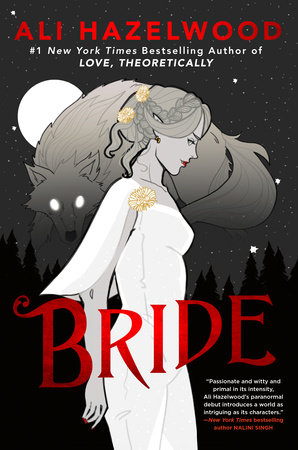

Which 3 Books Has Everybody Eagerly Ready for Release in 2024?
It is no surprise that the book world has been in a tantalizing flurry the past couple months in ancipation of 2024's new releases. In this article, we'll cover three books that have readers excited to jump right into the New Year, and who knows, maybe you'll find some spectacular recommendations to add to your own reading list!
Funny Story
Well known and immensely popular author, Emily Henry, announced her newest book Funny Story would be released on April 23rd. She primarily writes romance novels that captivate a lot of adult readers. Funny Story takes place in Michigan, where main female lead Daphne becomes a children's librarian after her fiance leaves her for his childhood best friend Petra. Daphne becomes roommates with Petra's ex, Miles Nowak, and the two conspire together to make their previous partners jealous. Will fake dating be enough though? Will love blossom between these complete pair of opposites as they bond over heartache?
House of Flame and Shadow
This list wouldn't be complete without famous fantasy author, Sarah J. Maas. She's been working on the Crescent City series since 2020 and announced that the third sequel would be releasing January 30th. The story is set in a futuristic fantasy world that continues following the story of Bryce Quinlan as she finds a way to get home after being stranded in a new world. This compelling story has readers on the edge of their seat waiting to see what's going to happen next between Bryce and main male lead, Hunt Athalar. Will Bryce find her way home? Or will she end up even more lost than she was before?
Bride
Our last flaming hot book to conclude this list of anticipated releases is Ali Hazelwood's Bride. Ali is known for writing contemporary romcom novels about women in STEM and academia; however, she surprised her fans with the announcement of a new fantasy novel coming out on February 6th. This paranormal romance follows a marriage of convenience between a werewolf, Lowe Moreland, and a vampire, Misery Lark. Is Misery trapped in a marriage doomed for failure? Or will love slowly blossom between the two as they get to know each other while trying to uphold the peace between their clans?